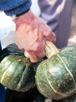
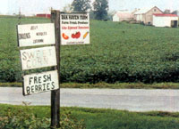
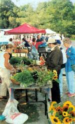
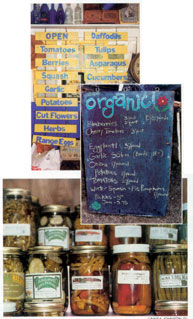
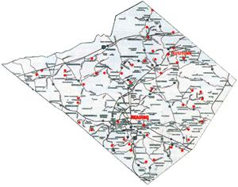
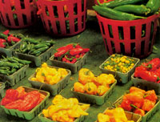
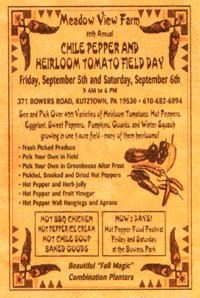
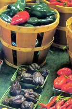
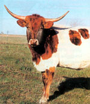
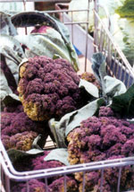

Remember your mother's warning, "Never take candy from strangers"? What about sirloin? Or squash? How much do you know about the celery you crunch, the peanuts you munch, the salmon on which you lunch?
When we buy supermarket products, we are basically buying our food from strangers. We risk eating toxic pesticides and preservatives. We risk being experimented upon by companies selling unlabeled genetically engineered foods. And we are supporting a dominant food production system that gives us cheap food but at a very high cost-bland flavor, too much sugar and salt, and a host of problems including pollution of our air and water, inhumane treatment of farmworkers and animals, deadly E.coli outbreaks and threats of mad cow disease.
Happily, the Real Food Revival is flourishing. More and more growers are moving away from agribusiness-as-usual, shifting to organic methods, diversifying their crops and setting up stands to sell their goods directly to those of us seeking sustainably produced fresh food and organic products. Now, even those of us who don't raise all (or any) of our own parsley or pumpkin can enjoy fresh food, seasonal food, Real Food. We can, face to face, ask the grower about what, if anything, was done to the colorful eggs and fragrant bread, luscious butter, sweet pears, honey, melons, creamy milk, tangy smoked fish and meats before we take them home. We can put lunch on the table having seen the field in which it was grown and having met the farmer who planted, tended and harvested the zesty rhubarb, glowing tomatoes and nutritious squash. Almost everywhere across the country these days, finding Real Food is practicable. And fun.
Living in Berks County, Pa., in the 1990s, I made my rounds of nearby farmstands a highlight of my weekends. Berks County is home to many Mennonite farmers who raise food for their own families as well as to sell at their farm stands. With a car full of friends or alone, I'd drive the curvy roads and rolly hills past contoured fields, the soil as rich as chocolate cake.
My first trips in the spring were to Asparagus Lady, whose hand-painted sign at the end of her driveway announced when there was or was not asparagus available. I drove in past the horse in the stall and the buggy nearby, knocked on her back door, requested a bunch or two of her asparagus, remarked upon the beautiful weather and asked how her later crops were coming along. Then I paid the modest price for the crisp green spears and continued my afternoon drive through the countryside.
Next stop was the rhubarb stand: A card table next to the huge roadside garden was usually loaded with bundles of rhubarb, and a jar in which I left my dollar. Children waved if they were weeding nearby. If I needed more rhubarb than was on the table, they would pull what I needed. I cooked rhubarb into sauce to spoon over hot biscuits-a year's supply into the freezer in less than an hour.
For early tomatoes I could always count on the Martins' roadside stand west of Kutztown. Mrs. Martin's greenhouse produced the earliest and the latest tomatoes on my Pennsylvania circuit. Spring, summer and fall, she and her children put out plums, peppers, tomatoes, squash, corn and melons. Often as not, upon hearing someone drive off the back road and park, one of her children would come running to help, to accept payment and to make change. Sometimes it was just me alone with the produce, and I left my payment in the box beside the produce display.
One fall, the Martins' stand included a few small boxes of ground cherries. "Yum," I said when I spotted them. She said almost no one bought them because so few knew what they were. I bought two boxes and made one small, very acidic, slightly cherry-tasting pie. It could have made jam or a great sauce for a baked ham.
Then there was the time when I stopped by for tomatoes and Mrs. Martin came out to meet me at the stand. I told her how much I loved her tomatoes, thanking her for growing them so beautifully, season after season. I commented that I also loved seeing her children growing year to year. It was then she told me that one of her sons had drowned just days before, in the pond out back of the house. Did I know him, she asked? "No," I said, as we wept quietly in the presence of the tomatoes, peppers and sweet corn. But, I said, I felt as if I had met him given all the food he had helped to harvest from their farm, and which I'd eaten and which was now part of me.
There are several other stands along my usual route, and I often stopped in even if I thought I had everything I needed, just to see if they had anything beyond the ordinarily wonderful. Maybe someone on the farm had made freshly churned sweet butter that week, finished a handmade quill put by homemade jams and jellies or chow chow. Maybe there'd be pie!
Near Krumsville, there's a winery that makes good champagne-style wines. A Topton, there's a small meat shop where the butcher will cut exactly the steaks or chop I want and wrap them neatly in white paper High up one bumpy driveway, there's lovely dried flower farm called Persephone' Garden, where I stopped whenever I needed a special gift. Her shop is near her garden, and the arrays of blossoms inside and outside are a treat in themselves. She creates and sells all kinds of dried flower arrangements, and teaches classes, too.
And then there's the splendid, tree-ripened fruit from County Line Orchard just north of Kempton, owned and operated by Todd Smith. The years the late frost doesn't get them first, tangy-sweet apricots are sold at County Line. Every year I lived nearby, I signed my name to a list. If and when the apricots came in the next spring, I got the postcard they mailed to me, and drove up, delirious, happy and usually in the company of other apricot aficionados. Jam and pie recipes were dancing in our heads, the flavor of last year's crop alive on our tongues. Then I made pies and tarts and jams and fruit leathers and brandied apricot preserves-anything I could think of to capture the plush and zingy flavor of this too-rare fruit.
Besides growing and selling apples, peaches, nectarines, apricots and blueberries, the people at County Line Orchard raise Jerseymac, Prima, Gala, Honeycrisp, Ozark Gold, Cortland, McIntosh, Empire, Jonagold, Red Delicious, Golden Delicious, Rome, Winter Banana, Stayman, Keepsake, Braeburn, Fuji and Suncrisp apples. All the varieties of each crop are labeled so you can be sure to find favorites to look forward to from year to year.
Then, too, a few years ago the orchardist's young daughter showed me a baby peacock she was raising. Besides returning for the astonishing fruit, that summer I returned a bit more often to hear the latest tales of the orchard's peacocks, and to watch the peachick and the daughter flourish.
It's almost impossible to buy just what I need when the fruit is all so scrumptious, so inviting, like the open arms of a luxuriant, favorite auntie. So, I buy extra, share with friends and invite them along the next weekend.
The one place I always visited was James and Alma Weavers' Meadow View Farm near Bowers. I scarcely know what are my favorite things at Meadow View! Maybe it's the bouquets from the cut-your-own, "Patchwork Quilt" flower garden behind the shop, next to the tall stone home. I especially loved cutting armfuls of brilliant purple larkspur and late-season asters.
During the year of the super-sweet bumper crop of local peaches, I would have said-juice dripping down my chin that, certainly, peaches were my all-time favorite. That peachy summer, I'd buy two or three bags of peaches, one to slurpily enjoy on the way home, the others to actually get back home with me, for pies and supper.
Each September, Meadow View Farm showcases their crops at the Chile Pepper and Heirloom Tomato Festival in the village of Bowers, just one-fourth of a mile from the farm. People crowd the town park full of food stands, musicians and artisans. Visitors stream down the road to tour the farm and even to pick their own peppers. There are pepper wreaths crafted by some of the Weavers' daughters, homemade habanero pepper jellies, pepper plants, dozens of kinds of spicy ripe peppers, plus all kinds of other veggies and herbs.
Everything is more than delicious, James there with a knife, cutting into melon and tomato alike, samples laid neatly on ice and free for the tasting. He is always eager to chat about his produce and offer recommendations, and he has become an expert on growing and waxing eloquent about heirloom vegetables.
Finding Local Farmers in your Neighborhood
Check the classified ads in the local newspaper, especially during fruit and sweet corn seasons.
Contact your state's organic growers association.
Explore the back roads and watch for roadside signs.
Ask about local farmers at co-ops and natural food stores.
For a directory of grass-fed meat and dairy products, go to www.eatwild.com .
To find a nearby CSA (Community Supported Agriculture) subscription service, go to www.csacenter.org .
To locate farmer's markets, food co-ops and mail-order Real Food suppliers, go to www.localharvest.org .
AN EXQUISITE WATERMELON
One hot summer day, two friends and I were happily driving our Pennsylvania farm stand circuit when we serendipitously happened upon a Customer Appreciation Day. Screeching to a halt and wedging our car into the herd of assorted parked cars, we saw tables and counters and flatbeds crammed with sample platters full of freshly harvested sweet red watermelon pieces, toothsome tomato bites on toothpicks, fluffy homemade ice cream samples, bits of homemade bread and rolls thick with fresh butter along with wee cups of delectable chow chow and other savory salsas and relishes.
Everywhere, too, were hills of colorful squash and eggplant, pecks and bushels of dozens of varieties of sunned tomatoes aside flatbeds of hefty melons and cantaloupes. There in the sparkling blue afternoon among the high summer welter of fresh, fragrant, ambrosial samples, appreciative, murmuring and mooing customers everywhere, we tasted the most delicate, crispest, juiciest and most flavorful yellow-flesh watermelon! Had we ever tasted anything like this before? We sampled and sampled and sampled no end.
Exquisite. Like nothing else. Ever.
Try as we might, we could not describe the fresh, sweet, succulent, crisp taste of the yellow melon, so we just had to buy enough not only for later gorging, but so that our other friends, too, could experience for themselves the "sweet juice of the sun in fresh, sweet, clean air" taste of this heavenly yellow-flesh watermelon.
I miss Pennsylvania, my friends there,and the farm stands, but I'm finding Real Food here in my new home, in Shawnee County, Kan., too. So far,I've followed a tiny sign I spotted along the highway to a wonderful greenhouse called the Henry Plant Farm.
A bank of greenhouses shelters an impressive selection of vegetable, flower and herb transplants, accompanied by bitty goslings scurrying about under wagons, a peacock croaking way up on a branch and braying happy donkeys munching in pens nearby. When I paid for my trunkful of plants at the cash register, I spotted a brochure listing a dozen or so other farm stands and pick-your-own orchards; I look forward to exploring a new route this year.
Here, fortunately, I've already found the farmer's markets in Topeka and Lawrence. There's goodwill in the air, Real Food at the stands and real connections among one another. I am happy to be actively engaged in the life of the Real Food I buy, celebrating the producers and the produce, nourished by food and community alike, palate and soul tingling.
If time is tight, I can zip through a farmer's market and grab a bunch of carrots, a round of cheese, loaf of bread, quart of creamy fresh milk and a dozen eggs in less time than it takes me to shoehorn my car into a supermarket parking lot and hike the stadium-sized store to collect the same items. So, finding Real Food doesn't have to be time-consuming along with fun and communal; it also can be efficient, when that's what you need.
Even when I'm not looking for it, Real Food seems to find me. Last spring I was driving along a dusty Kansas back road, showing the countryside to a friend visiting from Pennsylvania when we spotted a group of rare and handsome Longhorn cattle in a pasture right beside the road. We pulled over and got out to get a better look, and maybe take a photo of their beautiful cow faces. A pickup slowed down as it drove by. The driver rolled down his window and said, "Wanna see 'em close up? Follow us!"
See them we did. Photograph them we did. Find out their names, history and temperament we did. We spent most of an afternoon meeting the herd and chatting with Mike Capra, the Longhorns' owner, who told us what great mothers the cows are, and how low-maintenance the breed is. Turns out he owns a plumbing business and raises grass-fed, chemical-free beef on the side.
Even on vacation, I seek out Real Food. On Deer Isle, Maine, where I visit each September, Friday is farmer's market day in the church parking lot. I arrive before the growers do, eagerly awaiting the bounty and the conversation, and the sense of harmony and well-being I take home along with the delectable tomatoes and melons; bags of fresh-dug, earth-scented potatoes; green and ruby cabbages the size of my head; tasty rounds of goat and cow cheeses, and fragrant, irresistible smoked meats and seafood.
THE SPIRIT OF FOOD
Few things in life are more intimate, more evocative, than the food we eat. I remember my uncle whose mealtime grace was a jolly "Good food, good meat, good God, let's eat!" and my dad who said maybe we shouldn't be eating food that needed praying over, and an auntie who raised raspberries big as plums and sweet as honey.
Linnea Johnson writes stories, poems and novels, yearns for truth, aches for wisdom, but usually can settle for a lovely peach and blueberry pie nestled into a flaky shortbread crust.
Later-when I grew a bantam garden of salad greens and a couple of tomato plants-my little son spent a good part of spring among spinach he'd planted, waiting for it to grow tall enough for him to nibble on. And my daughter would play under our sole peach tree until the first fruit ripened and we could have our summer peach party.
I was brought up, and I brought up my children, among real people around a happy table laden with Real Food, spiced with real fun.
Food is how the environment enters our cells, our blood. From mother's milk to holiday feasting, now more than ever, what we eat is who we are physically, communally and politically. Food is family and celebration mirroring the design of life itself. Buying from local growers with the cycle of seasons is simply the best way to savor the true spirit, sum and substance of Real Food!
Linnea Johnson writes stories, poems and novels, yearns for truth, aches for wisdom, but usually can settle for a lovely peach and blueberry pie nestled into a flaky shortbread crust.
Mother Earth News
|
 Linnea Johnson Modest signs often lead to magnificent produce and chemical-free meat and dairy products. |
 Linnea Johnson You'll find heirloom tomatoes, hard-to-find salad greens, fresh flowers, artisan cheeses, local apples, home-baked pies, fresh meats and smoked fish- and of course, Maine's famed wild blueberries-at markets like this one in a church parking lot on Deer Isle, Maine. |
 Linnea Johnson Many farm markets offer unique pickles and canned goods along with an ever-changing menu of fresh produce. |
|
 Rob Cardillo Many cooperative extension offices publish lists of local farmers who sell directly to the public; some even publish maps and sponsor tours. Other ways to find fresh, local Real Food include: |
 Linnea Johnson Gorgeous chile peppers are a highlight of the annual field day at Meadow View Farm near Kutztown, Pa. |
 Longhorns are protective mothers, often keeping their newborn calves hidden in the brush for a couple of weeks after birth. |
|
 Linnea Johnson writes stories, poems and novels, yearns for truth, aches for wisdom, but usually can settle for a lovely peach and blueberry pie nestled into a flaky shortbread crust. |
 |
 |
|
 |
|
|